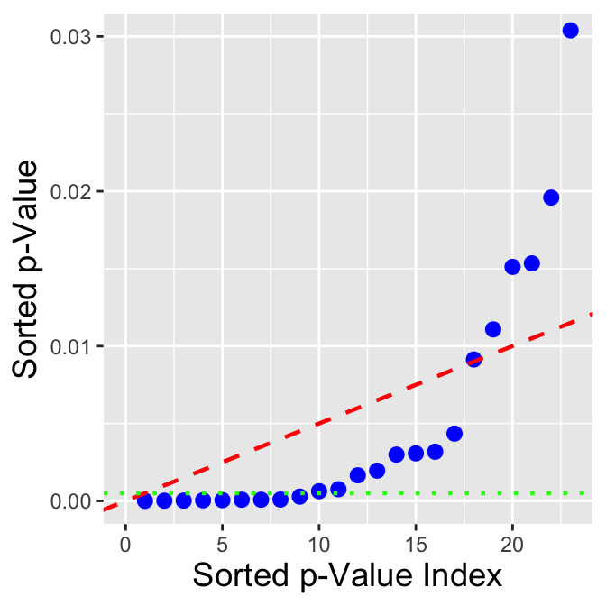

There are two primary types of convergence which interest us in this book: convergence in probability and convergence in distribution.
Let \(X_1,X_2,\ldots\) be a sequence of random variables, and let \(Y\) be some other random variable. (We note that the concept of a sequence can be initially confusing for students: here, \(X_n\) is a statistic formed from a set of data with sample size \(n\). A classic example of a sequence is \(\bar{X}_1,\bar{X}_2,...\); the first element is the mean for a sample of size 1 (the datum itself!), the second element is the mean that we compute after we independently sample a second datum from the same underlying distribution to go along with the first, etc.) In addition, let \(F_{X_n}\) denote the cumulative distribution function for \(X_n\) and \(F_Y\) denote the cdf for \(Y\). We say that
\(X_n\) converges in probability to \(Y\) if for every \(\epsilon > 0\), \[
P(\vert X_n - Y \vert > \epsilon) \rightarrow 0
\] as \(n \rightarrow \infty\); i.e., \(X_n \overset{p}{\rightarrow} Y\).
\(X_n\) converges in distribution to \(Y\) if \[
\lim_{n \rightarrow \infty} F_{X_n}(u) = F_Y(u)
\] for all values of \(u\) for which \(F_Y(u)\) is continuous; i.e., \(X_n \overset{d}{\rightarrow} Y\).
An example of convergence in probability is the weak law of large numbers, which states that \(\bar{X}_n \overset{p}{\rightarrow} \mu\). (This is a “weak” statement because it does not invoke “almost sure” convergence, a concept beyond the scope of this book.) What is “weak” about this statement? The statement \(P(\vert \bar{X}_n - Y \vert > \epsilon) \rightarrow 0\), where \(Y\) has mean \(\mu\), is not as restrictive a statement as others that one can make; for any chosen value of \(\epsilon\), \(\vert \bar{X}_n - Y \vert\) can stray so as to be greater than \(\epsilon\) an infinite amount of times as \(n \rightarrow \infty\). In other words, \(\bar{X}\) asymptotically approaches \(\mu\), but is still “allowed” to substantially deviate from that value for any finite \(n\).
7.2 The Central Limit Theorem: Proof
We introduce the Central Limit Theorem in Section 2.6. It states that if we have \(n\) iid random variables \(\{X_1,\ldots,X_n\}\) with mean \(E[X_i] = \mu\) and finite variance \(V[X_i] = \sigma^2 < \infty\), and if \(n\) is sufficiently large, then \(\bar{X}\) converges in distribution to a standard normal random variable: \[
\lim_{n \rightarrow \infty} P\left(\frac{\bar{X}-\mu}{\sigma/\sqrt{n}} \leq z \right) = \Phi(z) \,.
\] We can prove this using moment-generating functions.
Let \(X_i \overset{iid}{\sim} P(\mu,\sigma^2)\), where \(P\) is some distribution with finite variance, and let \[\begin{align*}
Y &= \frac{\bar{X}-\mu}{\sigma/\sqrt{n}} = \frac{1}{\sqrt{n}} \left(\frac{n\bar{X} - n\mu}{\sigma}\right) = \frac{1}{\sqrt{n}} \left(\frac{\sum_{i=1}^n X_i - n\mu}{\sigma}\right)\\
&= \frac{1}{\sqrt{n}} \sum_{i=1}^n \frac{X_i - \mu}{\sigma} = \frac{1}{\sqrt{n}} \sum_{i=1}^n Z_i \,.
\end{align*}\] Since the \(Z_i\)’s are standardized random variables, by definition \(E[Z_i] = 0\) and \(V[Z_i]\) = 1.
Here’s where things “break down” if we do not know \(\sigma\), but instead plug \(S\) in in CLT-related problems: if we use \(S\), then \(V[X_i] \neq 1\). However, a theoretical result known as Slutsky’s theorem saves us here. As we are determining here and below, \[
\frac{\sqrt{n}(\bar{X} - \mu)}{\sigma} \overset{d}{\rightarrow} Z \sim \mathcal{N}(0,1) \,,
\] and hence \[
\sqrt{n}(\bar{X} - \mu) \overset{d}{\rightarrow} Y \sim \mathcal{N}(0,\sigma^2) \,.
\] Furthermore, \(S^2 \overset{p}{\rightarrow} \sigma^2\) (by the weak law of large numbers), or equivalently \(S \overset{p}{\rightarrow} \sigma\) (by the continuous mapping theorem). Given these pieces of information, Slutsky’s theorem tells us that \(\sqrt{n}(\bar{X} - \mu)/S \overset{d}{\rightarrow} Y/\sigma\), a normally distributed random variable with mean 0 and variance 1. Hence eventually the CLT is valid, even when we plug in \(S\)!
To determine the distribution of \(Y\), we use the method of moment-generating functions: \[
m_Y(t) = m_{Z_1}\left(\frac{t}{\sqrt{n}}\right) \cdots m_{Z_n}\left(\frac{t}{\sqrt{n}}\right) = \left[m_{Z_i}\left(\frac{t}{\sqrt{n}}\right)\right]^n \,.
\] “Wait,” one might say. “We don’t know the mgf for the quantity \(Z_i\), so how can this possibly be helpful?” It is because we can work with the expected value and variance to get at the final result. First, \[\begin{align*}
m_{Z_i}\left(\frac{t}{\sqrt{n}}\right) &= m_{Z_i}\left.\left(\frac{t}{\sqrt{n}}\right)\right|_{t=0} + m_{Z_i}'\left.\left(\frac{t}{\sqrt{n}}\right)\right|_{t=0} \frac{t}{\sqrt{n}} + m_{Z_i}''\left.\left(\frac{t}{\sqrt{n}}\right)\right|_{t=0} \frac{t^2}{2n} + \cdots \\
&\approx m_{Z_i}(0) + E[Z_i] \frac{t}{\sqrt{n}} + E[Z_i^2] \frac{t^2}{2n} \\
&= E[\exp(0Z_i)] + 0 + (V[Z_i] + (E[Z_i])^2) \frac{t^2}{2n} \\
&= 1 + V[Z_i] \frac{t^2}{2n} = 1 + \frac{t^2}{2n} \,.
\end{align*}\] Thus \[
m_Y(t) \approx \left[ 1 + \frac{t^2}{2n} \right]^n = \left[ 1 + \frac{t^2/2}{n} \right]^n \,,
\] and, as \(n \rightarrow \infty\), \[
\lim_{n \rightarrow \infty} \left[ 1 + \frac{t^2/2}{n} \right]^n = \exp\left(\frac{t^2}{2}\right) \,.
\] This is the moment-generating function for a standard normal…hence \(Y\) converges in distribution to a standard normal random variable and \(\bar{X}\) converges in distribution to normal random variable with mean \(\mu\) and variance \(\sigma^2/n\).
7.3 Asymptotic Normality of Maximum Likelihood Estimates: Proof
When discussing point estimation in Section 2.11, we declared that as \(n \rightarrow \infty\), the maximum likelihood estimate for a parameter \(\theta\) converges in distribution to a normal random variable: \[
\sqrt{n}(\hat{\theta}_{MLE}-\theta) \overset{d}{\rightarrow} Y \sim \mathcal{N}\left(0,\frac{1}{I(\theta)}\right) ~\mbox{or}~ (\hat{\theta}_{MLE}-\theta) \overset{d}{\rightarrow} Y' \sim \mathcal{N}\left(0,\frac{1}{nI(\theta)}\right) \,.
\] Here, we sketch out why this is true. As we will see, this result rests upon fundamental concepts covered earlier in this book and chapter: the weak law of large numbers (aka, convergence in probability), and the central limit theorem.
We start with the log-likelihood function \(\ell(\theta \vert \mathbf{x})\). (However, to simplify the notation in what follows, we will drop the \(\mathbf{x}\) for now.) By definition, the MLE for \(\theta\) is that value for which \(\ell'(\theta) =
\ell'(\hat{\theta}_{MLE}) = 0\). The Taylor expansion of \(\ell'(\theta)\) around \(\hat{\theta}_{MLE}\) is \[
\ell'(\theta) \approx \ell'(\hat{\theta}_{MLE}) + (\theta - \hat{\theta}_{MLE})\ell''(\theta) + \cdots = (\theta - \hat{\theta}_{MLE})\ell''(\theta) + \cdots \,.
\] We rearrange terms (and introduce the factor \(\sqrt{n}\)): \[\begin{align*}
(\hat{\theta}_{MLE}-\theta)\ell''(\theta) &\approx -\ell'(\theta) \\
\sqrt{n} (\hat{\theta}_{MLE}-\theta)\ell''(\theta) &\approx -\sqrt{n}\ell'(\theta) \\
\sqrt{n} (\hat{\theta}_{MLE}-\theta) &\approx \frac{-\sqrt{n}\ell'(\theta)}{\ell''(\theta)} = \frac{\frac{1}{\sqrt{n}}\ell'(\theta)}{-\frac{1}{n}\ell''(\theta)} \,.
\end{align*}\] (Note that we reversed \(\theta\) and \(\hat{\theta}_{MLE}\) in the parentheses!)
Let’s look at the numerator and the denominator separately.
For the numerator: \[\begin{align*}
\frac{1}{\sqrt{n}}\ell'(\theta) &= \sqrt{n}\left(\frac{\ell'(\theta \vert \mathbf{x})}{n} - 0\right) \\
&= \sqrt{n}\left(\frac{\ell'(\theta \vert \mathbf{x})}{n} - E[\ell'(\theta \vert x_i)] \right) \\
&= \sqrt{n}\left(\frac{\sum_{i=1}^n \ell'(\theta \vert x_i)}{n} - E[\ell'(\theta \vert x_i)] \right) \,.
\end{align*}\] Here we utilize the results that, e.g., \(\ell'(\theta \vert \mathbf{x})\) equals the sum of the \(\ell'\)’s for each datum, and that the average value of the slope for the likelihood function is zero. What we have written is equivalent in form to \[
\sqrt{n} (\bar{X} - \mu)
\] and given the CLT, we know that as \(n \rightarrow \infty\), this quantity converges in distribution to normal random variable \(Y \sim \mathcal{N}(0,\sigma^2)\). Thus \[
\frac{1}{\sqrt{n}}\ell'(\theta) \overset{d}{\rightarrow} Y \sim \mathcal{N}\left(0,V[\ell'(\theta \vert x_i)]\right) \,,
\] and, since \(V[\ell'(\theta \vert x_i)] = E[(\ell'(\theta \vert x_i))^2] - (E[\ell'(\theta \vert x_i)])^2 = E[(\ell'(\theta \vert x_i))^2] = I(\theta)\), \[
\frac{1}{\sqrt{n}}\ell'(\theta) \overset{d}{\rightarrow} Y \sim \mathcal{N}\left(0,I(\theta)\right) \,.
\]
For the denominator, we can utilize the weak law of large numbers: \[
-\frac{1}{n} \ell''(\theta \vert \mathbf{x}) = -\frac{1}{n} \left( \sum_{i=1}^n \ell''(\theta \vert x_i) \right) \overset{p}{\rightarrow} -E[\ell''(\theta \vert x_i)] = I(\theta) \,.
\]
At last, we can determine the variance of the ratio: \[\begin{align*}
\lim_{n \rightarrow \infty} V[\sqrt{n}(\hat{\theta}_{MLE}-\theta)] &= V\left[ \frac{\frac{1}{\sqrt{n}}\ell'(\theta)}{I(\theta)} \right] = \frac{1}{I(\theta)^2} V\left[ \frac{1}{\sqrt{n}}\ell'(\theta) \right]\\
&= \frac{1}{I(\theta)^2} I(\theta) = \frac{1}{I(\theta)} \,.
\end{align*}\] We combine this information with the finding above that the numerator in the ratio is, asymptotically, a normally distributed random variable with mean 0 and variance \(I(\theta)\) to write \[
\sqrt{n}(\hat{\theta}_{MLE}-\theta) \overset{d}{\rightarrow} Y \sim \mathcal{N}\left(0,\frac{1}{I(\theta)}\right) \,.
\]
7.4 Point Estimation: (Relative) Efficiency
The efficiency of an unbiased estimator of a parameter \(\theta\) is \[
e(\hat{\theta}) = \frac{1/I(\theta)}{V[\hat{\theta}]} \,,
\] i.e., the ratio of the minimum possible variance for an unbiased estimator of \(\theta\) (the Cramer-Rao lower bound) to the variance for the estimator in question. If an unbiased estimator attains \(e(\hat{\theta})\) for all possible values of \(\theta\), the estimator is efficient. (It is also the MVUE!)
The relative efficiency is a metric that we can use to compare two unbiased estimators: \[
e(\hat{\theta}_1,\hat{\theta}_2) = \frac{V[\hat{\theta}_2]}{V[\hat{\theta}_1]} \,.
\] If \(e(\hat{\theta}_1,\hat{\theta}_2) > 1\), we would opt to use \(\hat{\theta}_1\); otherwise, if \(e(\hat{\theta}_1,\hat{\theta}_2) < 1\), we would opt to use \(\hat{\theta}_2\). (We could use either if the relative efficiency is exactly one.)
As an example, let \(X_i \sim \mathcal{N}(\mu,\sigma^2)\), and let \(\hat{\mu}_1 =
\bar{X}\) and \(\hat{\mu}_2 = (X_1+X_2)/2\). What is the relative efficiency of these two estimators?
We know the general result that \(V[\hat{\mu}_1] =
V[\bar{X}] = \sigma^2/n\), and we know that \(\hat{\mu}_2\) is simply the sample mean of the first two data, so \(V[\hat{\mu}_2] = V[(X_1+X_2)/2] = \sigma^2/2\). The relative efficiency is thus \[
e(\hat{\mu}_1,\hat{\mu}_2) = \frac{V[\hat{\mu}_2]}{V[\hat{\mu}_1]} = \frac{\sigma^2/2}{\sigma^2/n} = \frac{n}{2} \,.
\] This value is \(> 1\) for all \(n > 2\), and it is never less than 1, so we would choose to use \(\hat{\mu}_1 = \bar{X}\) as our estimator of the population mean.
7.5 Sufficient Statistics: a Deeper Dive
Let us assume that we are given \(n\) independent and identically distributed (iid) data sampled from some distribution \(P\) whose shape is (without loss of generality) governed by a single parameter \(\theta\): \[
\{X_1,\ldots,X_n\} \overset{iid}{\sim} P(\theta)
\] A sufficient statistic \(U\) is a function of \(\mathbf{X}\) that encapsulates all the information needed to estimate \(\theta\), i.e., if \(U\) is sufficient, no other computed statistic would provide any additional information that would help us estimate \(\theta\). Sufficient statistics are not unique: if \(U\) is a sufficient statistic, then every one-to-one function \(f(U)\) is as well, so long as \(f(U)\) does not depend on \(\theta\).
In Section 3.6 we show how one finds a sufficient statistic by factorizing the likelihood function, and uses it to define the minimum variance unbiased estimator (the MVUE). In our demonstration, we sweep a number of things under the metaphorical rug, such as the fact that to be used to determine the MVUE, a sufficient statistic has to be both minimal and complete. We elaborate on those points below. However, we start by providing an alternate means by which to determine a sufficient statistic.
7.5.1 A Formal Definition of Sufficiency
A statistic \(U(\mathbf{X})\) is a sufficient statistic for the parameter \(\theta\) if the conditional distribution of \(\mathbf{X}\) given \(U(\mathbf{X})\) does not depend on \(\theta\), i.e., if \(P(X_1=x_1,\ldots,X_n=x_n \vert U(\mathbf{X}) = k)\) does not depend on \(\theta\).
As an example, let \(\{X_1,\ldots,X_n\} \overset{iid}{\sim}\) Bernoulli(\(p\)), and let us propose \(U(\mathbf{X}) = \sum_{i=1}^n X_i\) as a sufficient ststistic. To determine if it is, we need to determine if \[
P(X_1=x_1,\ldots,X_n=x_n \vert U(\mathbf{X}=k) = \frac{P(X_1=x_1,\ldots,X_n=x_n,U(\mathbf{X})=k}{P(U(\mathbf{X}=k)}
\] does not depend on \(p\). The first thing to note is that for the numerator to be non-zero, \(k = x_1+\cdots+x_n = \sum_{i=1}^n x_i\), and thus \(U(\mathbf{Y})=k\) is, from an information standpoint, completely redundant with respect to \(X_1=x_1,\ldots,X_n=x_n\)…so we can ignore it: \[
P(X_1=x_1,\ldots,X_n=x_n \vert U(\mathbf{X}=k) = \frac{P(X_1=x_1,\ldots,X_n=x_n)}{P(U(\mathbf{X}=k)} \,.
\] The next thing to note is that because the data are iid, we can rewrite the numerator as a product of probabilities: \[
P(X_1=x_1,\ldots,X_n=x_n) = P(X_1=x_1) \cdots P(X_n=x_n) = \prod_{i=1}^n P(X_i=x_i) \,,
\] which means, in the context of Bernoulli random variables, that the numerator is \[
\prod_{i=1}^n P(X_i=x_i) = p^k (1-p)^{n-k} \,.
\] (Why \(p^k\), etc.? We are given that \(U(\mathbf{X}) = k\), i.e., that there are \(k\) observed successes (and \(n-k\) observed failures) in the sample.
That takes care of the numerator. Now for the denominator: \[
P(U(\mathbf{X} = k) = \binom{n}{k} p^k (1-p)^{n-k} \,,
\] because the sum of \(n\) Bernoulli-distributed random variables is binomially distributed (as you can show yourself using the method of moment-generating functions).
Thus \[
P(X_1=x_1,\ldots,X_n=x_n \vert U(\mathbf{X}=k) = \frac{p^k(1-p)^{n-k}}{\binom{n}{k} p^k(1-p)^{n-k}} = \frac{1}{\binom{n}{k}} \,,
\] which does not depend on the parameter \(p\). Thus \(U(\mathbf{X}) = \sum_{i=1}^n X_i\) is indeed a sufficient statistic for \(p\).
(The foregoing clearly illustrates why factorization is a preferred means by which to determine sufficient statistics!)
7.5.2 Minimal Sufficiency
A question that naturally arises when dealing with sufficient statistics is: if we have many sufficient statistics, which one is the best one? It would be the one that “reduces” the data the most. In a given context, \(U(\mathbf{X})\) is minimal sufficient if, given any another sufficient statistic \(T(\mathbf{X})\), \(U(\mathbf{X}) = f(T(\mathbf{X}))\).
To generate a minimal sufficient statistic, one can make use of the Lehmann-Scheffe theorem. If we have two iid samples of data of the same size, \(\{X_1,\ldots,X_n\}\) and \(\{Y_1,\ldots,Y_n\}\), then, if the ratio of likelihoods \[
\frac{\mathcal{L}(x_1,\ldots,x_n \vert \theta)}{\mathcal{L}(y_1,\ldots,y_n \vert \theta)}
\] is constant as a function of \(\theta\) if and only if \(g(x_1,\ldots,x_n) =
g(y_1,\ldots,y_n)\) for a function \(g(\cdot)\), then \(g(X_1,\ldots,X_n)\) is a minimal sufficient statistic for \(\theta\).
As an example, let \(\{X_1,\ldots,X_n\}\) and \(\{Y_1,\ldots,Y_n\} \overset{iid}{\sim}\) Poisson(\(\lambda\)). The ratio of likelihoods is \[
\frac{\mathcal{L}(x_1,\ldots,x_n \vert \theta)}{\mathcal{L}(y_1,\ldots,y_n \vert \theta)} = \frac{\prod_{i=1}^n \frac{\lambda^{x_i}}{x_i!} e^{-\lambda}}{\prod_{i=1}^n \frac{\lambda^{y_i}}{y_i!} e^{-\lambda}} = \frac{\prod_{i=1}^n \frac{1}{x_i!}}{\prod_{i=1}^n \frac{1}{y_i!}} \frac{\lambda^{\sum_{i=1}^n x_i}}{\lambda^{\sum_{i=1}^n y_i}} = \frac{\prod_{i=1}^n \frac{1}{x_i!}}{\prod_{i=1}^n \frac{1}{y_i!}} \lambda^{\left(\sum_{i=1}^n x_i - \sum_{i=1}^n y_i\right)} \,.
\] This is only constant as a function of \(\lambda\) if we can “get rid of” \(\lambda\), by setting its exponent to 0…i.e., by setting \(\sum_{i=1}^n x_i = \sum_{i=1}^n y_i\). Thus \(g(\mathbf{x}) =
\sum_{i=1}^n x_i\) is a minimal sufficient statistic for \(\lambda\).
Note that in the context of the present course, any and all sufficient statistics that we define via, e.g., factorization are minimal sufficient.
One might ask “what is an example of a sufficient statistic that is not minimally sufficient?” The answer is simple but may not initially be intuitive, in that we naturally think of a statistic as being a single number (the output from applying a given function to a full dataset). However, e.g., a full dataset is a statistic, and it is a sufficient statistic: there is sufficient information in a full dataset so as to compute the likelihood of a population parameter \(\theta\). However, a full dataset is not minimally sufficient! If \(T(\mathbf{X}) = \bar{X}\), and \(U(\mathbf{X}) = \{X_1,\ldots,X_n\}\), then we cannot define a function \(f\) such that \(\{X_1,\ldots,X_n\} = f(\bar{X})\).
7.5.3 Completeness
The concept of the completeness of a statistic is a general concept, i.e., it is not limited to sufficient statistics. One can think of it as the idea that each value of \(\theta\) in a distribution maps to a distinct pmf or pdf. We bring up completeness here because the concept appears in the context of determining an MVUE: the sufficient statistic that we find via, e.g., factorization technically needs to be both minimal and complete.
Let \(f_U(u \vert \theta)\) be the family of pmfs or pdfs for the statistic \(U(\mathbf{X})\). \(U\) is dubbed a complete statistic if \(E[g(U)] = 0\) for all \(\theta\) implies \(P(g(U) = 0) = 1\) for all \(\theta\).
As an example, let \(U \sim\) Binomial(\(n,p\)), with \(0 < p < 1\), and let \(g(\cdot)\) be a function such that \(E[g(U)] = 0\). Then \[
0 = E[g(U)] = \sum_{u=0}^n g(u) \binom{n}{u} p^u (1-p)^{n-u} = (1-p)^n \sum_{u=0}^n g(u) \binom{n}{u} \left( \frac{p}{1-p}\right)^u \,.
\] For any choice of \(u\) and \(n\), \(\binom{n}{u} [p/(1-p)]^u > 0\). So, in order to have \(E[g(U)] = 0\) for all \(p\), \(g(u) = 0\) for all \(u\), i.e., \(P(g(U) = 0) = 1\). Therefore \(U\) is a complete statistic.
Note that a complete statistic is also minimal sufficient, but the converse is not necessarily true: a minimal sufficient statistic may not be complete.
7.5.4 The Rao-Blackwell Theorem
The Rao-Blackwell theorem implies that an unbiased estimator for \(\theta\) with a small variance is, or can be made to be, a function of a sufficient statistic: if we have an unbiased estimator for \(\theta\), we might be able to improve it using the prescription of the theorem. In the end, the theorem provides a mathematically more challenging route to defining a minimum variance unbiased estimator than what we show in the main text\(-\)likelihood factorization followed by the “de-biasing” of a sufficient statistic\(-\)and hence we relegate it here.
Let \(\hat\theta\) be an unbiased estimator for \(\theta\) such that \(V[\hat\theta] < \infty\). If \(U\) is a sufficient statistic for \(\theta\), define \(\hat\theta^* = E[\hat\theta \vert U]\). Then, for all \(\theta\), \[
E[\hat\theta^*] = \theta ~~~ \text{and} ~~~ V[\hat\theta^*] \leq V[\hat\theta] \,.
\]
Let’s suppose we have sampled \(n\) iid data from a Binomial distribution with number of trials \(k\) and proportion \(p\). We propose an estimator for \(p\): \(X_1/k\). First, is \(\hat{p} = X_1/k\) unbiased? We have that \[
E[\hat{p}-p] = E\left[\frac{X_1}{k}\right] - p = \frac{1}{k}E[X_1] - p = \frac{1}{k}kp - p = 0 \,.
\] So…yes. Second, is \(V[\hat{p}] < \infty\)? \(V[X_1/k] = V[X_1]/k^2 = p(1-p)/k\)…so, also yes. We are thus free to use the Rao-Blackwell theorem to improve upon \(\hat{p} = X_1/k\): \[
\hat\theta^* = E[\hat\theta \vert U] = E\left[\frac{X_1}{k} \left| ~ U = \sum_{i=1}^n X_i \right. \right] \,.
\] Since we are given the sum of the data, and since the data are iid, we would expect, on average, that \(X_1\) has the value \(U/n\), and thus that \(X_1/k\) has the value \(U/(nk)\). Thus \[
\hat\theta^* = \frac{\bar{X}}{k}
\] is the MVUE for \(p\).
7.6 Hypothesis Testing: Multiple Comparisons
Multiple comparisons is a somewhat opaque term that denotes the situation in which we perform many hypothesis tests simultaneously and need to correct for the fact that if the null is correct in all cases, it becomes more and more likely that we will observe (multiple) instances in which we decide to reject the null. We can illustrate this using the binomial distribution: if we collect \(k\) sets of data (e.g., \(k\) separate sets of \(n\) iid data sampled from a Uniform(0,\(\theta\)) distribution), and perform level-\(\alpha\) hypothesis tests for each, then the number of tests results in which we reject the null is \[
X \sim \mbox{Binom}(k,\alpha) \,,
\] The expected value of \(X\) is \(E[X] = k\alpha\), which increases with \(k\). The family-wise error rate, or FWER, is the probability that at least one test will result in a rejection when the null is correct: \[
FWER = P(X > 0) = 1 - P(X = 0) = 1 - \binom{k}{x} \alpha^0 (1-\alpha)^k = 1 - (1-\alpha)^k \,.
\] For instance, if \(k = 10\) and \(\alpha = 0.05\), the family-wise error rate is 0.401: for every 10 tests we perform, the probability of erroneously rejecting one or more null hypotheses (i.e., detecting one or more false positives) is about 40 percent. This increase in the FWER with \(k\) is not good, and is well-known to be associated with a commonly seen data analysis issue dubbed data dredging or p-hacking. \(p\)-hacking greatly increases the probability that researchers will make incorrect claims about what their data say, and worse yet, that they will publish papers purporting these claims.
To mitigate this issue, we can attempt to change the test level for individual tests such that the overall FWER is reduced to \(\alpha\). There are many procedures for how we might go about changing the test level for individual tests, but the most commonly used one is the Bonferroni correction: \[
\alpha \rightarrow \frac{\alpha}{k} \,.
\] What is the FWER given this correction? Let’s assume the null is correct for all \(k\) tests. Then \[
FWER = P\left( p_1 \leq \frac{\alpha}{k} \cup \cdots \cup p_k \leq \frac{\alpha}{k} \right) = \sum_{i=1}^k P\left( p_i \leq \frac{\alpha}{k}\right) = \sum_{i=1}^k \frac{\alpha}{k} = \alpha \,.
\] This works! Except…what happens if actually only \(k'\) out of the \(k\) are actually true? The FWER becomes \(k' \alpha / k \leq \alpha\). Thus when there are incorrect nulls sprinkled into the mix, the FWER is too low…which means that the Bonferroni correction is unduly conservative. Using it will lead to us possibly not detecting false nulls that we should have detected! We illustrate this issue in an example below.
An alternative to the Bonferroni correction and related procedures is to not focus upon the FWER, but to attempt to limit the false discovery rate, or FDR, instead. The simplest and most often used FDR-based procedure is the one of Benjamini and Hochberg (1995).
compute all \(k\)\(p\)-values;
sort the \(p\)-values into ascending order: \(p_{(1)},\ldots,p_{(k)}\);
determine the largest value \(k'\) such that \(p_{(k')} \leq k' \alpha / k\); and
reject the null for all tests that map to \(p_{(1)},\ldots,p_{(k')}\).
In an example below, we illustrate the use of the BH procedure. To be clear: \(\alpha\) here represents the proportion of rejected null hypotheses that are actually correct. (“We reject the null 20 times. Assuming \(\alpha = 0.05\), then we expect that we were right to reject the null 19 times, and that we’d be mistaken once.”) This is different from the FWER setting, where \(\alpha\) represents the probability of erroneously rejecting one or more null hypotheses. (“We perform 100 independent tests. Assuming \(\alpha =
0.05\), we expect to erroneously reject the null five percent of the time when the null is correct…but we can say nothing about how often we correctly reject the null.”) We can further illustrate this point with the following table:
Null Correct
Null False
Total
Null Rejected
V
S
R
Fail to Reject
U
T
k-R
Total
k’
k-k’
k
The only observable random variable here is \(R\), the total number of rejected null hypotheses. In the FDR procedure, we focus on the first row. We know that \[
E[V] = \alpha k' \leq \alpha k
\] and we know that \(V+S \leq k\), so \[
E\left[\frac{V}{V+S}\right] = E\left[\frac{V}{R}\right] \leq \frac{\alpha k'}{k} \leq \alpha \,.
\] The FWER procedure, on the other hand, focuses on the first column, with \[
E\left[\frac{V}{V+U}\right] = \frac{\alpha k'}{k'} = \alpha \,.
\]
7.6.1 Examples
7.6.1.1 An Illustration of Multiple Comparisons When Testing for the Normal Mean
In the code chunk below, we generate \(k = 100\) independent datasets of size \(n = 40\); for \(k' = 80\) datasets, \(\mu = 0\), and for the remainder, \(\mu = 0.5\). For simplicity, we assume \(\sigma^2\) is known and is equal to one. For each dataset, we test the hypotheses \(H_o : \mu = 0\) versus \(H_a : \mu > 0\).
Code
set.seed(101)n <-40k <-100k.p <-80mu <-c(rep(0, k.p), rep(0.5, k - k.p))mu.o <-0sigma2 <-1p <-rep(NA, k)for ( ii in1:k ) { X <-rnorm(n, mean = mu[ii], sd = sigma2) p[ii] <-1-pnorm(mean(X), mean = mu.o, sd =sqrt(sigma2 / n))}
Below, we try two separate corrections for multiple comparisons: the Bonferroni correction (controlling FWER), and the Benjamini-Hochberg procedure (controlling FDR).
Code
alpha <-0.05cat("The number of rejected null hypotheses for Bonferroni: ", sum(p < alpha / k), "\n")
The number of rejected null hypotheses for Bonferroni: 9
Code
w <-which(p < alpha / k)cat("The number of falsely rejected null hypotheses is: ", sum(w <= k.p), "\n")
The number of falsely rejected null hypotheses is: 0
Code
p.sort <-sort(p)cat("The number of rejected null hypotheses for FDR: ", sum(p.sort < (1:k) * alpha / k), "\n")
The number of rejected null hypotheses for FDR: 17
Code
p.rej <- p.sort[p.sort < (1:k) * alpha / k]w <- p %in% p.rejw <-which(w ==TRUE)cat("The number of falsely rejected null hypotheses is: ", sum(w <= k.p), "\n")
The number of falsely rejected null hypotheses is: 0
With the Bonferroni correction, we reject nine null hypotheses (with the guarantee that there is, on average, a five percent chance that we erroneously reject one or more of the true nulls…here, we reject no correct null hypotheses. See Figure 7.1.
With the BH procedure, we reject 17 null hypotheses (with the guarantee that on average, five percent of these 17 [meaning, effectively, 1] is an erroneous rejection…here, we reject no correct null hypotheses).

Figure 7.1: An illustration of the difference between the Bonferroni correction and the Benjamini-Hochberg procedure. The blue dots represent sorted \(p\)-values resulting from a simulation in which 80 of 100 null hypotheses are correct (so that a perfect disambiguation between null and non-null hypotheses would result in 20 rejected nulls, with none falsely rejected. The Bonferroni correction shifts \(\alpha = 0.05\) downwards to the green short-dashed line; 9 \(p\)-values lie below the line, so 9 (true) null hypotheses are rejected in all. The BH procedure looks for the number of \(p\)-values lying below the red dashed line; that number is 17 (with no false rejections).
Benjamini, Y., and Y. Hochberg. 1995. “Controlling the False Discovery Rate: A Practical and Powerful Approach to Multiple Testing.”Journal of the Royal Statistical Society, Series B 57: 289–300.